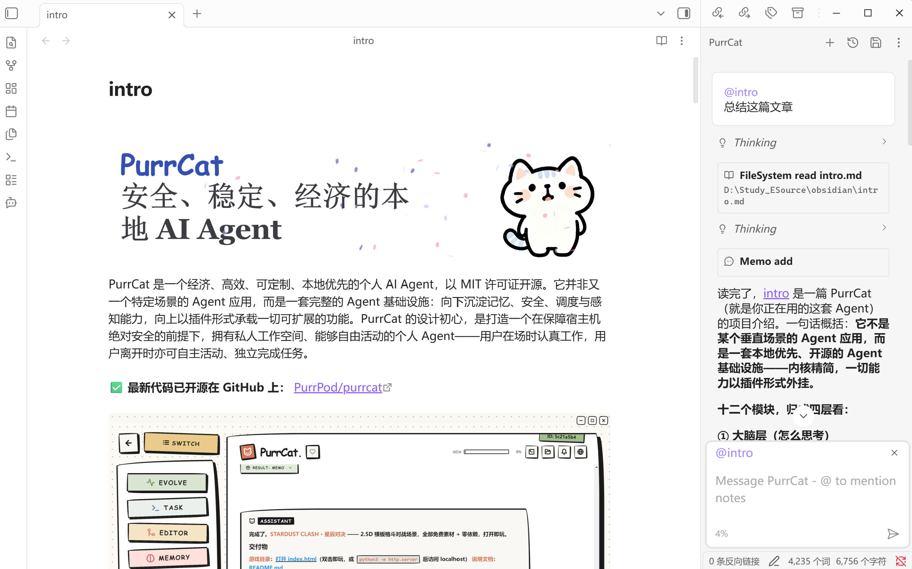

PurrCat 实现了 ACP（Agent Client Protocol）的 Agent 端。ACP 是由 Zed 发起的开放协议，定义了「客户端」与「Agent」之间对话的标准词汇——任何支持 ACP 的软件，都可以把 PurrCat 当作自己的 Agent 来指挥。这篇以 Obsidian 为例走一遍完整流程。
接入前的两件事
- 启动 PurrCat 桌面端。首次启动时会自动生成 ACP 鉴权令牌，并把转接脚本部署到
~/.purrcat/bin/acp_relay.py。这是一个稳定路径：PurrCat 升级时会自动刷新脚本，编辑器侧的配置永不失效。 - 安装 uv。转接脚本靠它拉起（前端「部署」页可一键安装）。
原理一览
编辑器与 PurrCat 后端之间，靠一个「转接脚本」当搬运工：
编辑器 ──stdio JSON-RPC──▶ acp_relay.py ──HTTP+SSE·token 鉴权──▶ PurrCat 网关
令牌与端口由转接脚本自动发现（默认 127.0.0.1:8000），不需要手动填写任何东西。你唯一要做的，是在编辑器里告诉它这条启动命令。
以 Obsidian 为例
1. 安装 Agent Client 插件
Obsidian 设置 → 第三方插件 → 浏览，搜索 Agent Client，安装并启用。
2. 复制接入命令
PurrCat 前端 → 设置 → ACP 接入，卡片里就是现成的接入命令，点复制即可。Windows 上的样子：
command: uv args: run C:/Users/<用户名>/.purrcat/bin/acp_relay.py
3. 添加自定义 Agent
Obsidian 设置 → Agent Client → Custom agents → Add custom agent，按下表填写：
| 字段 | 填写内容 |
|---|---|
| Agent ID | purrcat |
| Display name | PurrCat |
| Path | uv |
| Arguments（每行一个） | run 和转接脚本的完整路径 |
4. 开始聊天
点击侧栏的机器人图标（或命令面板里的 Open chat view），顶部下拉选择 PurrCat，发一条消息试试。会话与前端同源：在 Obsidian 里开的对话，同样会出现在 PurrCat 的任务页里，记忆、技能、沙盒全部共用。

聊天期间保持 PurrCat 桌面端在运行——转接脚本转发的是本地后端。
只有后端以非默认端口启动时才需要改端口（settings.json 的 acp_port），转接脚本会自动读取。
其它支持 ACP 协议的软件也可以通过类似的操作接入，如 VS Code 等。